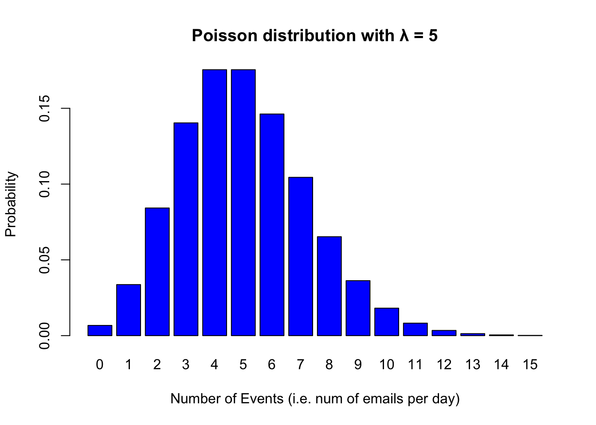

Chapter 7 Linear Regression
In the previous section, we looked at some descriptive statistics about data. In all of these cases, we looked at the descriptive statistics of a single variable. For example, we looked at the mean and standard deviation of total sleep hours for various animals. The variable we considered was total_sleep_hours. This is also called univariate statistics because we were interested in the statistics of a single variable.
Now, we are moving onto bivariate statistics. In other words, we will analyze the relationship between two variables. Instead of calculating the mean of a single variable, we will calculate the conditional mean of a variable based on some other variable. For example, we could try calculating the relationship between total_sleep_hours and bodyweight.
7.1 Word Frequency Effects
Instead of looking at animal sleep hours, this time let’s look at something more relevant for linguistics. Earlier, we discussed the role of frequency in processing.
- Our hypothesis was that more frequent words will be processed more easily.
- We operationalized this hypothesis by picking
- word frequency as our independent variable (also called a predictor)
- reaction time as our dependent variable (also called response or outcome variable)
The typical dataset we will be working with has a structure similar to the one below:
| dependent var. (\(Y\)) |
predictor 1 (\(X_1\)) |
predictor 2 (\(X_2\)) |
(other predictors) |
|---|---|---|---|
| 705 | 1.2 | 2.2 | (…) |
| 209 | 8.3 | -4.0 | (…) |
| 334 | 7.2 | -1.4 | (…) |
| … | … | … | (…) |
- What the variables represent will depend on the problem you’re studying and the question you’re asking
- dependent variable (e.g., reaction time)
- predictor 1 (e.g., frequency)
- predictor 2 (e.g., familiarity)
Let us take a look at a linear regression model where x = frequency and y=response time.

Figure 7.1: Response duration as a function of word frequency. The frequencies are not raw frequencies. Instead, log frequencies are used. We’ll talk more about this.
- Each point on the plot above indicates the average response time of multiple participants.
- The somewhat diagonal line is called the regression line.
7.2 Simple Linear Regression
In simple regression, our goal is to find the regression line as IT IS our model. The line extends to infinity and makes predictions about every point on its path. For example, our model can make a prediction about the reaction time if I were to find a word that has the log frequency 7. It would tell me that the reaction time would be a little below 400 miliseconds.
An important point regarding simple linear regression is that it can be used for data where the dependent variable is continuous (e.g. 436 miliseconds) but not categorial (e.g. grammatical/ungrammatical).
7.3 Finding the Regression Line
In simple linear regression, the value for a dependent variable is a linear function of the predictor variable. A linear function looks like the following.
\[y = a + b * x\]
Let us try to understand these values a bit.
\[ \underbrace{Y}_{\text{dependent variable}} = \overbrace{\underbrace{a}_{\text{intercept}}}^{\text{additive term}} + \overbrace{\underbrace{b}_{\text{slope}} * \underbrace{X}_{\text{predictor}}}^{\text{additive term}} \]
Mathematically, a line is defined in terms of an intercept and slope.
- Slope can be defined as the amount of change in
yasxchanges one unit. \[ slope = \frac{\Delta y}{\Delta x} \] - A rising slope will have a positive value whereas a descending slope will have a positive value.
- For example, the slope in the Response Duration Model above is -70. This means that for each unit of increase in frequency, we observe a 70ms decrease in reaction time.
A slope is not enough to define a line on a plot. There can be an infinite number of lines that have the same slope. We also need the intercept. Intercept determines the value predicted for y when x is 0. Consider the following graphs.

Figure 7.2: Lines with different intercept and slope values.
The intercept for the data Response Duration Model above is 880ms. So, our Response Duration Model is:
\[response\ duration = 880ms + (-70 \frac{ms}{freq}) * word\ frequecny \]
A good way to remember the intercept and the slope and a linear model is to remember the taxi fares. The taxi fares will usually start with a constant fee (a minimum fee). This is your intercept. It’s the 0th kilometers and it already costs you 7 TLs. Then the cost for each kilometer is your slope. At the time of writing these notes, it is 6TLs.
library(ggplot2)
distance = 1:20
cost = 7+(6*distance)
ggplot(data=NULL, aes(distance,cost)) +
scale_x_continuous(breaks = seq(0, 20, by =1)) +
scale_y_continuous(breaks = seq(0, 125, by = 5)) +
geom_smooth(method="lm", formula =y~x + I(7+6*x))## Warning in predict.lm(model, newdata = new_data_frame(list(x = xseq)), se.fit =
## se, : prediction from a rank-deficient fit may be misleading
Slope and intercept are the coefficients of our linear regression model. Our task is to find the coefficients from the data.
7.4 Estimating the Coefficients
A Linear Regression analysis of a particular data is essentially all about estimating coefficients and interpreting the results. In the taxi model, we already knew the coefficients. So, we had a model about the world and we can use the model to make predictions about taxi costs. In the Response Duration Model, the coefficients were learnt from the data but I gave them to you directly. So, how are we going to estimate the coefficients when what we have is just data but nothing else?
Let’s not get into the weeds of how to find the right linear regression model. Instead, let’s just use R to estimate the coefficients. This is called fitting a model. So, let’s fit a linear model on the taxi model and interpret its results. We’ll start with the taxi model simply because we already know the coefficients. We’ll let R estimate some coefficients for us and then compare them with the coefficients we used to generate the cost data above from the distance variables and our coefficients.
The simplest way to fit a linear model on some data is the lm() function. lm() takes two variables x (predictor) and y (dependent variable) and fits a model by modeling y as a linear function of x. The tilde ~ means: element on the left as a function of element on the right.
For our taxi model, we will model cost as a function of duration. The following lines of code does that.
# fit a linear regression model of cost as a function of distance
taxi_model <- lm(cost ~ distance)
# print the model coefficients
taxi_model##
## Call:
## lm(formula = cost ~ distance)
##
## Coefficients:
## (Intercept) distance
## 7 6Unbelievable! The model estimated the intercept (start cost) as 7 and the slope (cost per km) as 6. Simple as that. Notice that the model estimated these coefficients simply from the data but nothing else.
The model object that we stored in the variable taxi_model has a lot more information. Let us take a look at the results of our model. To do this, we’ll take use the glance() function from the broom package.
library(broom)
library(tidyverse)## ── Attaching packages ─────────────────────────────────────── tidyverse 1.3.2 ──
## ✔ tibble 3.1.8 ✔ dplyr 1.0.10
## ✔ tidyr 1.2.1 ✔ stringr 1.4.1
## ✔ readr 2.1.2 ✔ forcats 0.5.2
## ✔ purrr 0.3.4
## ── Conflicts ────────────────────────────────────────── tidyverse_conflicts() ──
## ✖ dplyr::filter() masks stats::filter()
## ✖ dplyr::lag() masks stats::lag()glance(taxi_model)## Warning in summary.lm(x): essentially perfect fit: summary may be unreliable
## Warning in summary.lm(x): essentially perfect fit: summary may be unreliable## # A tibble: 1 × 12
## r.squ…¹ adj.r…² sigma stati…³ p.value df logLik AIC BIC deviance
## <dbl> <dbl> <dbl> <dbl> <dbl> <dbl> <dbl> <dbl> <dbl> <dbl>
## 1 1 1 4.66e-15 1.10e33 1.51e-287 1 633. -1259. -1256. 3.90e-28
## # … with 2 more variables: df.residual <int>, nobs <int>, and abbreviated
## # variable names ¹r.squared, ²adj.r.squared, ³statisticThere are a lot of details. For now, we’ll focus on only two values R2 and the p value.
results <- glance(taxi_model) %>%
select(r.squared, p.value)## Warning in summary.lm(x): essentially perfect fit: summary may be unreliable
## Warning in summary.lm(x): essentially perfect fit: summary may be unreliableresults## # A tibble: 1 × 2
## r.squared p.value
## <dbl> <dbl>
## 1 1 1.51e-287Without going into any detail yet, I can tell you that we got an excellent model. Our R2 is 1, which is perfect and our p value is very small 1.51e-287 (This means that there are 286 zeroes after 0. and before 151. So, a very small number). When the p value is so small, we can conclude that the relation between distance and cost is statistically significant (i.e. not random).